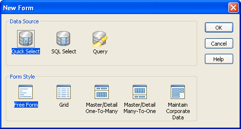

The easiest way to get started building form styles is to copy an existing form style and work with it. By examining its structure and making small changes, you can quickly understand how form styles work.
 To begin by modifying an existing form style:
To begin by modifying an existing form style:
Open the Library painter in PowerBuilder.
Copy the window and menu that serve as the foundation for a form style to a library that is on your application's library search path.
 Starting from a built-in form style The windows and menus that serve as the basis for the built-in
form styles are in IMSTYLE105.PBL, which is
shipped with InfoMaker and installed in the InfoMaker 10.5 directory.
You can make a copy of this PBL and use it as the basis of your
own form styles.
Starting from a built-in form style The windows and menus that serve as the basis for the built-in
form styles are in IMSTYLE105.PBL, which is
shipped with InfoMaker and installed in the InfoMaker 10.5 directory.
You can make a copy of this PBL and use it as the basis of your
own form styles.
Open the window in the Window painter and select File>Save As from the menu bar to save it with a new name.
Give the window a new name.
You can use any name you want, except that names of windows that define form styles must be unique across all style libraries that are used by an InfoMaker user.
Define a special comment for the window (for instructions, see "Identifying the window as the basis of a style").
Click OK to save the window.
Open the menu in the Menu painter and select File>Save As from the menu bar to save it with a new name.
Provide a new name and an optional comment, then click OK to save the menu.
You do not need to provide a comment for the menu, but it is a good idea to identify it as being used in the form style you are building.
Enhance the form style (for instructions, see "Completing the style ").
In order for InfoMaker to recognize that a window in a library serves as the basis for a form style, you must specify a comment for the window that starts with the text Style:
Style: text that describes the style
The text that follows Style: is the text that displays below the icon for the form style in the New Form dialog box in InfoMaker.
For example, if you save a w_pbstyle_freeform window with the comment Style: Maintain corporate data in a style library, InfoMaker users see this when they create a new form:

You can specify the comment either when first saving the window or in the Library painter.
For more information about designing windows, see the PowerBuilder User's Guide .